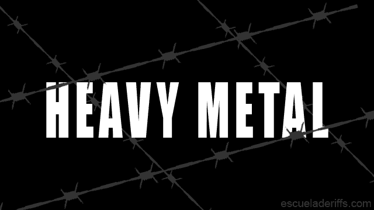

<article class="main">
    <section class="noticias redondeado">
        <div class="titulo redondeado">

            <h1 class="titulo-metal">La Historia del Metal</h1>
        </div>
        <div class="imagen-portada">
            
        </div>
        <div class="contenido">
            <p class="historia">El Heavy Metal es un género musical marcado por Guitarras Distorsionadas con Palm
                Mute, Ritmos de Batería muy acentuados, letras con contenido agresivo, y en general un sonido pesado
                adornado con melodías y solos frenéticos.
                Su estructura musical es una mezcla del Blues, Rock y clásico. Así que combina escalas pentatónicas
                y de Blues con estructuras clásicas, dando mucho juego para crear estilos y sonidos diferentes… que
                más tarde derivarán en múltiples subgéneros dentro del Heavy Meta</p>
            <h2 class="redondeado">Inicios</h2>
            <p>Con la llegada de los ochenta comenzaron a aparecer los primeros subgéneros del metal; por un lado el
                glam metal que lideró las ventas y las listas musicales de los principales mercados y por el otro el
                metal extremo que provenía de la escena underground. De este último surgió con una amplia
                popularidad el thrash metal liderada por Metallica, Megadeth, Slayer y Anthrax. Sin embargo, en la
                década posterior dicho éxito comercial decayó ante el auge de nuevos sonidos alternativos,
                principalmente por el grunge.</p>
            <h2 class="redondeado">Bandas Iconicas</h2>
            <ul>
                <li>Iron Maiden</li>
                <li>Metallica</li>
                <li>Black Sabbath</li>
                <li>Judas Priest</li>
                <li>Megadeth</li>
                <li>Motörhead</li>
                <li>Pantera</li>
                <li>Helloween</li>
                <li>Slayer</li>
                <li>Manowar</li>
                <li>Anthrax</li>
                <li>Accept</li>
                <li>Stratovarius</li>
                <li>Kreator</li>
                <li>Testament</li>
                <li>Dream Theater</li>
                <li>Saxon</li>
            </ul>
        </div>
    </section>
</article>